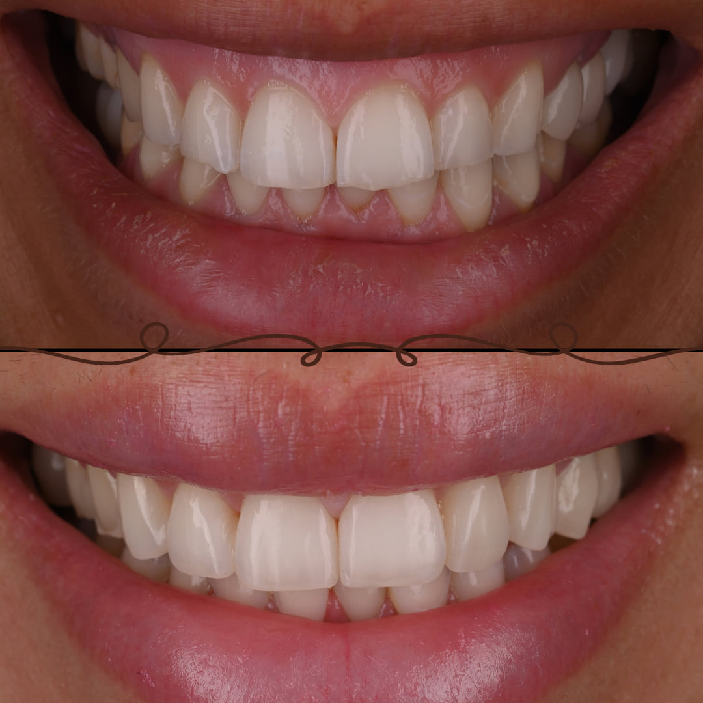

Accueil › Patient › Facettes ou composite ?
Pour choisir
Facettes ou composite ?
Comparatif
Le composite préserve généralement davantage les tissus et se répare facilement. La céramique offre une stabilité supérieure du matériau mais implique une démarche prothétique et peut nécessiter une préparation de la dent.

Praticien hospitalier, Pitié-Salpêtrière · CMME, Sainte-Anne

1 / 5
Les deux techniques
Le composite bonding : ajouter plutôt que remplacer
Le composite bonding consiste à appliquer directement sur la dent une résine de teinte dentaire, puis à la modeler afin de modifier ou restaurer son anatomie.
Dans de nombreuses indications esthétiques, cette technique peut être essentiellement additive : la nouvelle forme est construite sur la dent existante avec peu ou pas de préparation de l’émail.
Elle peut notamment être envisagée pour restaurer un bord incisif, modifier certaines proportions, fermer certains espaces, corriger une asymétrie ou restaurer des dents présentant une usure limitée.
Son autre particularité est sa réparabilité. Une restauration composite peut être repolie, modifiée ou réparée localement lorsque cela est nécessaire.
Les facettes en céramique : stabilité et maîtrise du projet
Une facette est une restauration en céramique collée sur la face visible de la dent. Elle est conçue à partir d’un projet esthétique puis réalisée avant d’être assemblée à la dent.
La céramique permet de maîtriser précisément la forme, les proportions, l’état de surface et les propriétés optiques de la restauration. Elle présente également une grande stabilité de teinte et de surface dans le temps.
Selon la position initiale de la dent, son volume, la modification recherchée et le projet final, une préparation de l’émail peut être nécessaire. La quantité de tissu retirée ne doit donc pas être considérée comme identique dans tous les cas.
C’est notamment pour cette raison que la planification du projet avant toute préparation prend une place importante dans ce type de traitement.
Découvrir le composite bonding · Découvrir les facettes dentaires
Composite
- approche conservatrice ;
- technique directe ;
- possibilité d’ajout ;
- réparabilité ;
- intégration esthétique possible ;
- évolution possible de la surface, de la brillance ou de la teinte avec le temps ;
- entretien et repolissage possibles.
Céramique
- céramique ;
- stabilité de surface ;
- stabilité de teinte ;
- maîtrise des formes ;
- propriétés optiques ;
- importance de la planification ;
- préparation possible selon la situation ;
- modification locale ultérieure moins simple qu’avec un composite direct.
2 / 5
Comparer, critère par critère
| Critère | Composite bonding | Facettes en céramique |
|---|---|---|
| Principe | Résine appliquée et modelée directement sur la dent | Restauration en céramique conçue puis collée sur la dent |
| Préservation tissulaire | Souvent essentiellement additive | Variable selon la situation ; une préparation peut être nécessaire |
| Modification de forme | Très adaptée aux ajouts et modifications ciblées | Permet des modifications plus importantes et très planifiées |
| Modification de teinte | Possible mais dépend de la situation initiale et de l’épaisseur disponible | Plus grande capacité à modifier et stabiliser certaines situations de couleur |
| Stabilité de teinte | Peut évoluer avec le temps | Très élevée |
| État de surface | Peut nécessiter entretien et repolissage | Très stable |
| Réparabilité | Réparation ou modification locale généralement possible | Réparation locale plus limitée ; stratégie dépend du problème rencontré |
| Planification | Importante | Particulièrement importante avant toute préparation |
| Nombre de dents | Très pertinent pour corrections ciblées mais utilisable dans des projets plus larges | Particulièrement adapté à certains projets esthétiques pluridentaires |
| Entretien | Contrôle, polissage ou retouche selon évolution | Contrôle clinique et entretien habituel |
| Invasivité | Généralement faible lorsque l’approche est additive | Dépend du projet et de la préparation nécessaire |
3 / 5
Comment on choisit
Raisonner en gradient thérapeutique
En dentisterie esthétique, le choix ne devrait pas commencer par le matériau.
Il peut être utile de raisonner du traitement le moins invasif vers les solutions nécessitant davantage d’intervention :
ne pas traiter → éclaircir → déplacer → ajouter → restaurer → préparer lorsque cela devient nécessaire.
Selon la demande, cela peut correspondre à une simple surveillance, un éclaircissement, une orthodontie, une restauration additive en composite, une facette en céramique ou une combinaison de plusieurs approches.
L’objectif est de ne pas retirer du tissu dentaire lorsqu’une solution plus conservatrice permet d’obtenir un résultat compatible avec le projet.
Quand le composite peut être intéressant
Le composite est particulièrement intéressant lorsque la correction peut être obtenue principalement par addition.
La décision dépend cependant de l’occlusion, de la quantité de tissu restant, de l’étendue de la modification, du nombre de dents et du projet esthétique global. Ces exemples ne constituent donc pas des indications automatiques.
Quand les facettes peuvent être envisagées
Les facettes peuvent être discutées lorsque le projet nécessite notamment :
Leur indication doit cependant prendre en compte la position initiale des dents, l’émail disponible, l’occlusion, le volume final recherché, la préparation éventuellement nécessaire et les alternatives plus conservatrices.
S’orienter selon la situation
- Petit éclat ou bord dentaire à reconstruire → Composite
- Modification localisée de forme → Composite souvent pertinent
- Petit espace à fermer → Composite ou orthodontie selon la situation
- Teinte générale trop foncée → Éclaircissement à envisager avant de restaurer
- Modification importante de plusieurs formes → Composite ou céramique selon le projet
- Modification importante et stable de teinte/forme → Facettes pouvant être envisagées
- Mauvaise position des dents → Évaluer d’abord l’orthodontie
- Dents courtes ou usées → Diagnostic de l’usure avant choix du matériau
- Projet complexe → Planification avant décision thérapeutique
Ces orientations ne constituent pas des indications automatiques. L’examen clinique reste nécessaire pour déterminer les solutions adaptées à une situation individuelle.
4 / 5
Les questions qui décident vraiment
Les facettes nécessitent-elles toujours de tailler les dents ?
Non, mais toutes les situations ne permettent pas non plus de réaliser des facettes sans préparation.
La possibilité d’une approche additive ou très peu invasive dépend notamment de la position initiale des dents et du volume que l’on souhaite obtenir.
Ajouter une épaisseur de céramique sur une dent déjà trop vestibulée ou trop volumineuse n’aurait pas le même sens que reconstruire une dent en retrait ou ayant perdu du volume.
La quantité de préparation nécessaire doit donc être déterminée à partir du projet final, et non décidée de façon identique pour tous les patients.
Le composite est-il réellement réversible ?
Une approche composite strictement additive préserve généralement la structure dentaire initiale et permet des modifications ou réparations ultérieures.
Le terme « réversible » doit toutefois être utilisé avec prudence : retirer une restauration adhésive sans aucune intervention sur son support n’est pas une notion absolue.
Il est plus précis de parler d’une approche généralement très conservatrice et modifiable.
Comment vieillissent composite et céramique ?
Les deux matériaux peuvent donner des résultats esthétiques durables lorsqu’ils sont correctement indiqués et réalisés, mais ils ne vieillissent pas de la même manière.
Le composite peut progressivement présenter des modifications de brillance, de texture ou de teinte. L’un de ses avantages est de pouvoir être entretenu, repoli, modifié ou réparé localement.
La céramique présente une excellente stabilité de surface et de teinte. En revanche, lorsqu’une restauration céramique présente un problème important, la stratégie de réparation ou de remplacement est différente de celle d’un composite direct.
La longévité d’un traitement ne dépend pas uniquement du matériau. L’indication, le collage, le volume restauré, les contraintes fonctionnelles, l’hygiène, les habitudes et le suivi participent également à son évolution.
Faut-il forcément choisir un seul matériau ?
Le projet doit être guidé par la situation des dents et les objectifs thérapeutiques, et non par l’obligation d’utiliser une seule technique.
Un projet, pas un matériau
- composite et céramique peuvent éventuellement coexister ;
- un éclaircissement peut précéder les restaurations ;
- une correction orthodontique peut parfois être réalisée avant ;
- toutes les dents n’ont pas nécessairement besoin du même traitement.
5 / 5
Avant de décider
Parfois, la réponse est : ni composite ni facettes
Toutes les demandes esthétiques ne nécessitent pas d’ajouter un matériau sur les dents.
Si le problème concerne principalement la couleur, un éclaircissement peut parfois répondre à la demande.
Si le problème concerne principalement la position des dents, une approche orthodontique peut être plus logique que de modifier leur forme pour masquer leur position.
Si les dents paraissent trop courtes parce qu’elles sont usées, il faut d’abord comprendre l’origine et l’étendue de cette usure.
Le choix entre composite et facettes n’intervient donc qu’après avoir déterminé que l’ajout d’une restauration constitue réellement la bonne réponse.
Découvrir l’éclaircissement · Comprendre les usures dentaires
Et pour des dents usées ?
Des dents usées ne constituent pas uniquement une problématique esthétique.
Avant de choisir un matériau, il faut rechercher les mécanismes ayant contribué à la perte de substance et évaluer l’étendue de l’usure.
Dans certaines situations, le composite permet de reconstruire de manière très conservatrice les volumes perdus. Dans d’autres, la céramique peut trouver sa place dans le projet de réhabilitation.
Le choix ne se fait donc pas uniquement selon l’apparence souhaitée, mais également selon la quantité de tissu restant, les volumes à reconstruire, les contraintes fonctionnelles et le projet global.
Pourquoi planifier avant de choisir
Lorsqu’un projet concerne plusieurs dents, la planification précède le choix du matériau. Elle s’appuie notamment sur :
Le raisonnement central est le suivant : peut-on atteindre le projet principalement en ajoutant, ou faut-il modifier certaines dents pour créer l’espace nécessaire ?
L’approche du Dr Franck Moyal
Le Dr Franck Moyal utilise dans sa pratique esthétique et restauratrice aussi bien les techniques directes en composite que les restaurations adhésives en céramique.
Le choix entre ces approches est réalisé à partir de la situation initiale, du projet esthétique, de la quantité de tissus dentaires à préserver et des contraintes propres à chaque cas.
Une attention particulière est portée aux techniques additives et à la préservation de l’émail lorsque celles-ci sont compatibles avec le résultat recherché.
La photographie clinique et la planification permettent notamment d’anticiper le projet avant de choisir définitivement le matériau ou de préparer les dents.
Ce sur quoi s’appuie la planification
- les photographies cliniques ;
- l’analyse du sourire ;
- la planification esthétique ;
- la simulation lorsqu’elle est pertinente ;
- le mock-up lorsqu’il est pertinent.
Questions fréquentes
Lequel est le plus naturel ?
Ni l’un ni l’autre par principe. Le naturel dépend de la forme, des proportions, de la texture et de l’intégration aux dents voisines : composite et céramique y parviennent tous deux lorsqu’ils sont bien indiqués et bien réalisés.
Lequel dure le plus longtemps ?
La céramique est plus stable en teinte et en surface. Le composite peut perdre de la brillance ou se colorer avec le temps, mais il se repolit et se répare sur place ; repère clinique : autour de 6 à 7 ans avant retouche, sans date d’expiration.
Lequel abîme le moins les dents ?
Le composite, le plus souvent : il est additif, avec peu ou pas de préparation. Une facette peut aussi être posée avec une préparation très limitée quand la position et le volume de la dent s’y prêtent ; cela se décide sur le projet.
Peut-on commencer par du composite et passer aux facettes plus tard ?
Dans certaines situations, oui. Une approche composite additive préserve la dent et laisse la porte ouverte. Mais toutes les transitions ne sont pas simples : cela s’évalue cliniquement, le moment venu.
Faut-il éclaircir les dents avant ?
Souvent, oui, quand la teinte fait partie de la demande : l’éclaircissement se fait avant, pour choisir la teinte des restaurations sur des dents déjà plus lumineuses. La séquence dépend du traitement envisagé.
Combien coûtent le composite et les facettes ?
Le prix est établi de manière personnalisée, selon la technique, le nombre de dents et le projet retenu, et vous est remis après le bilan esthétique.
Composite, facettes… ou une autre solution ?
Le choix du matériau vient après le projet. Un bilan permet de déterminer ce qui convient réellement à votre situation.
Prendre rendez-vous